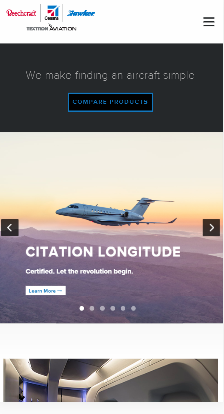
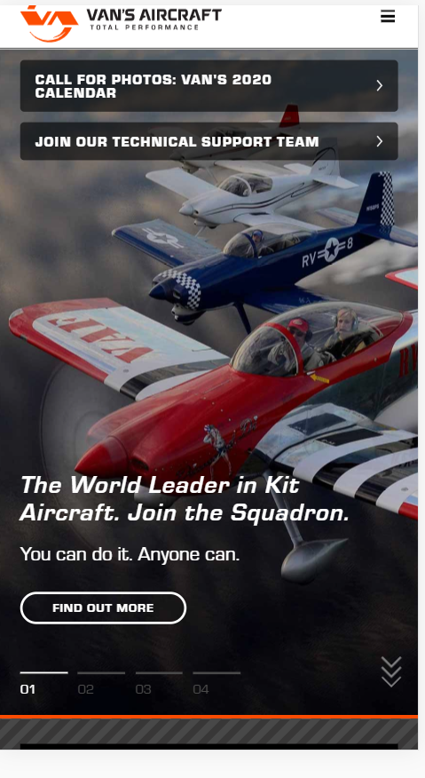
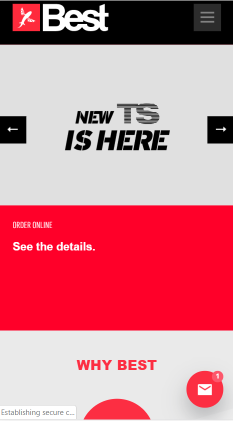

White Space and Clean Design
Cessna Textron Aviation
https://cessna.txtav.com
I chose Cessna as a great example of a good use of white space and clean design because the site is just that. As I scrolled down the page on one side is a small picture and on the other side is plenty of white space with a little text in it. They did not try to throw too much words into it, but kept it clean with a ‘Read More’ button if the person wants to read more about the aircraft.
Contrast
Van's Aircraft
https://www.vansaircraft.com
I chose Van’s Aircraft as a great sight with plenty of great contrast. As you see the page initially it has a dark background picture with some beautiful brilliant colored aircraft. Scrolling down it change between white on black text and white on orange text. The pictures do a brilliant job at making the website ‘pop’ with the contrast of colors.
Alignment
Best Kiteboarding
https://www.bestkiteboarding.com